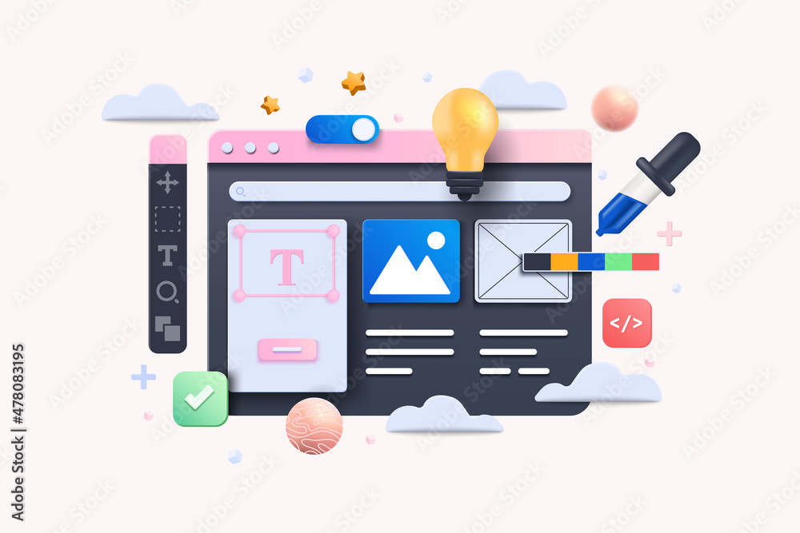

Hello I'm Karan Rathore
I'm Software Engineer and User experience developer with excellent problem solving skills, and ability to perform well in a team. Passionate about coding and designing.
Goblin concept digital sculpture with
human-like skin. Learned a lot of quick tips
and look development.
More Shots From This Project ↗
Subsurface weight, specular roughness,
diffuse maps generated with the procedure
and manual techniques.
See Case Study →

Experimental creature modeling for school project.
Project WIP